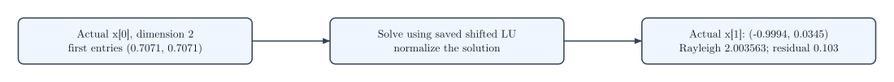
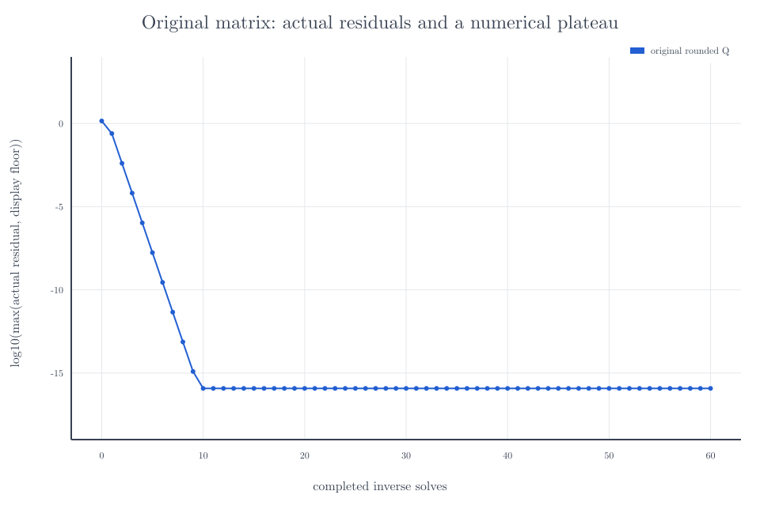
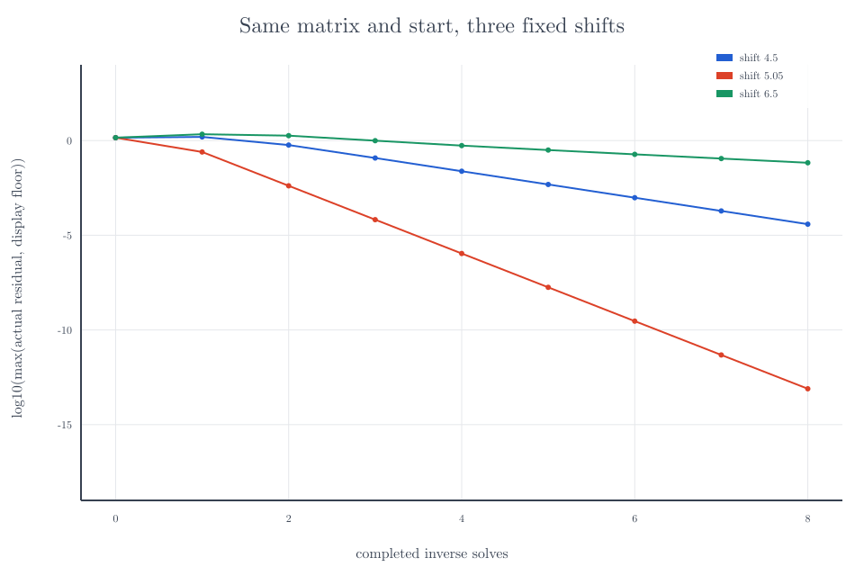
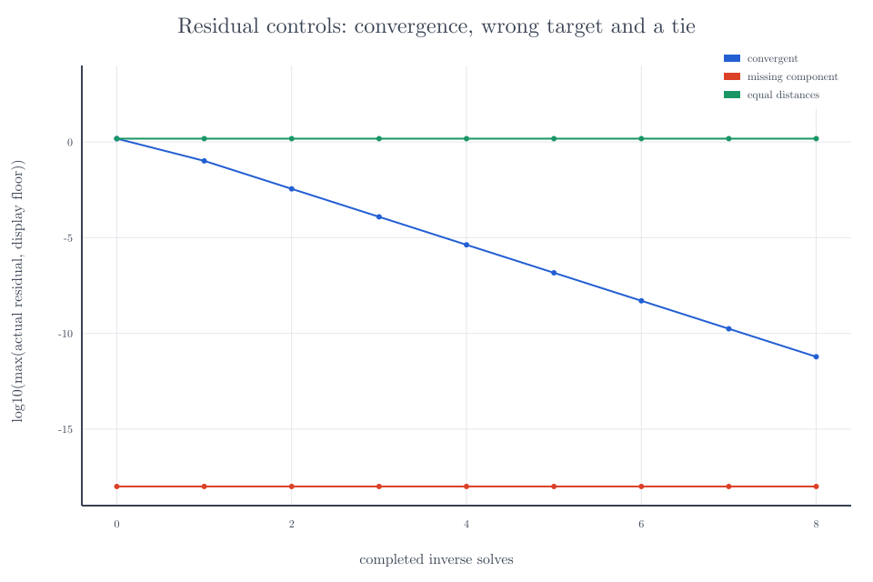

Inverse Iteration: One Factorization, Actual Eigenvector Histories
Abstract
A fixed shift turns a nearby eigenvector into the dominant direction of a linear solve. Factor the shifted matrix once, solve repeatedly and normalize each actual iterate. Starting with a two-dimensional calculation, we preserve the original rounded three-dimensional matrix and distinguish its actual spectrum from its intended spectrum. Actual residual histories expose convergence, floating-point plateaus, missing starting components and equal-distance failures. No dataset is needed for these controlled linear-algebra experiments.
Start with two components
Take A=diag(2,5), shift 2.1 and the normalized equal-entry start. The shifted matrix is diag(−0.1,2.9); solving divides the two coordinates by these entries. The first unnormalized direction is approximately (−7.0711,0.2438), and normalization changes its length without changing its direction. The unwanted to wanted component ratio is multiplied by −1/29 each step. Eigenvector sign can alternate, so a sign change is not a convergence failure. The diagram shows the actual first transition from the single producing run.
#include <dm/dm.hpp>
int main() {
std::filesystem::create_directories("build");
const auto t =
dm::algorithms::inverse_iteration_trace({{2, 0}, {0, 5}}, 2.1, {3});
std::print("| solve | x0 | x1 | Rayleigh | residual |\n| ---: | ---: | ---: | ---: | ---: |\n");
for (const auto &s : t.steps)
std::print("| {} | {:.8f} | {:.8f} | {:.8f} | {:.8e} |\n", s.iteration,
s.pair.vector[0], s.pair.vector[1], s.pair.value, s.residual);
std::print("Factorizations {}, inverse solves {}.\n", t.run.factorizations,
t.run.solves);
dm::algorithms::inverse_iteration_diagram(t).save_svg(
"build/inverse_tiny.svg");
}| solve | x0 | x1 | Rayleigh | residual |
|---|---|---|---|---|
| 0 | 0.70710678 | 0.70710678 | 3.50000000 | 1.50000000e+00 |
| 1 | -0.99940600 | 0.03446228 | 2.00356295 | 1.03325416e-01 |
| 2 | 0.99999929 | 0.00118906 | 2.00000424 | 3.56717688e-03 |
| 3 | -1.00000000 | 0.00004100 | 2.00000001 | 1.23006273e-04 |
Factorizations 1, inverse solves 3.

Derive convergence and identify the assumptions
For a real symmetric matrix with orthonormal eigenvectors, expand the start in that basis. A nonsingular fixed shift gives the unnormalized direction
Normalization cancels in ratios. If j is a simple, uniquely nearest eigenvalue and its starting coefficient is nonzero, every unwanted ratio satisfies
This gives geometric directional convergence in exact arithmetic. A zero wanted coefficient remains zero; a tied nearest distance gives no strict contraction. For repeated nearest eigenvalues the limit may be any direction in their eigenspace. General nonsymmetric inputs are accepted by the implementation, but this orthonormal-basis argument does not establish a guarantee for them.
The reported scalar is the Rayleigh quotient, not the fixed shift. For a unit iterate, orthogonality gives
Thus eigenvalue error can be much smaller than directional error. The absolute residual is the norm of A*x−value*x. The dimensionless displayed diagnostic uses the Frobenius norm:
For symmetric A, the distance from the Rayleigh value to some eigenvalue is at most residual/norm(x): expand the residual in the eigenbasis and bound every squared shifted eigenvalue below by the nearest squared distance. This does not identify the intended eigenvector or prove the input matrix matches its design.
Preserve the original rounded matrix
The original experiment forms Q*diag(2,5,9)*Q-transpose with rows of Q equal to (0.6667,−0.6667,0.3333), (0.6667,0.3333,−0.6667), and (0.3333,0.6667,0.6667). These rounded columns are not exactly orthonormal. Consequently a tiny residual at about 5.000333 is a correct solution of the supplied matrix, not exact recovery of the intended eigenvalue five. The next program retains all original entries, shift 5.05 and sixty solves. Every plotted residual is captured during that one run, including the start; it does not rerun the solver with increasing iteration caps.
#include <dm/dm.hpp>
int main() {
std::filesystem::create_directories("build");
const auto a = dm::algorithms::inverse_iteration_fixture();
const auto t = dm::algorithms::inverse_iteration_trace(a, 5.05, {60});
std::print("| input | final Rayleigh | difference from intended five | absolute residual | scaled " "residual |\n| --- | ---: | ---: | ---: | ---: |\n");
std::print("| original rounded Q | {:.12f} | {:.8e} | {:.8e} | {:.8e} |\n",
t.run.pair.value, t.run.pair.value - 5, t.run.residual,
t.run.relative_residual);
std::print("Final vector ({:.8f}, {:.8f}, {:.8f}).\n", t.run.pair.vector[0],
t.run.pair.vector[1], t.run.pair.vector[2]);
std::print("Stored states {}, factorizations {}, inverse solves {}.\n",
t.steps.size(), t.run.factorizations, t.run.solves);
dm::algorithms::inverse_iteration_residual_plot({t}, {"original rounded Q"}).title("Original matrix: actual residuals and a numerical plateau").ylim(-19, 4).save_svg("build/inverse_original.svg");
}| input | final Rayleigh | difference from intended five | absolute residual | scaled residual |
|---|---|---|---|---|
| original rounded Q | 5.000333314809 | 3.33314809e-04 | 1.19510558e-16 | 7.71577405e-18 |
Final vector (-0.66675739, 0.33335927, 0.66656296). Stored states 61, factorizations 1, inverse solves 60.

Control the intended spectrum and vary only the shift
For the control, use rows (2,−2,1)/3, (2,1,−2)/3 and (1,2,2)/3. Their columns are orthonormal in exact arithmetic, with spectrum 2,5,9 for the constructed matrix. Floating arithmetic still rounds the entries and products. All three shifts below have five as their uniquely nearest eigenvalue. Their predicted directional contraction factors are 0.2 for shift 4.5, about 0.0163934 for 5.05, and 0.6 for 6.5. Each curve is a separate eight-solve experiment using the same matrix and start. A residual is not itself the angle, so its finite-step ratios need not equal these asymptotic directional factors.
#include <dm/dm.hpp>
int main() {
std::filesystem::create_directories("build");
const auto a = dm::algorithms::inverse_iteration_fixture(false);
std::vector<dm::algorithms::InverseIterationTrace> traces;
std::vector<std::string> labels;
std::print("| fixed shift | Rayleigh after eight solves | absolute residual | scaled residual |\n| ---: " "| ---: | ---: | ---: |\n");
for (double mu : {4.5, 5.05, 6.5}) {
traces.push_back(dm::algorithms::inverse_iteration_trace(a, mu, {8}));
labels.push_back(std::format("shift {}", mu));
const auto &r = traces.back().run;
std::print("| {:.2f} | {:.12f} | {:.8e} | {:.8e} |\n", mu, r.pair.value,
r.residual, r.relative_residual);
}
dm::algorithms::inverse_iteration_residual_plot(traces, labels).title(
"Same matrix and start, three fixed shifts").ylim(-19, 4).save_svg(
"build/inverse_shifts.svg");
}| fixed shift | Rayleigh after eight solves | absolute residual | scaled residual |
|---|---|---|---|
| 4.50 | 4.999999999508 | 3.84001124e-05 | 2.47933194e-06 |
| 5.05 | 5.000000000000 | 7.84050735e-14 | 5.06228212e-15 |
| 6.50 | 5.001126383251 | 6.72045896e-02 | 4.33879898e-03 |

Failure controls are part of the method
On diag(2,5), the start (0,1) has no component in the nearest eigenspace for shift 2.1: it stays at the eigenvalue five with zero residual. This is a perfect residual for the wrong requested eigenvalue. At shift 3.5 the two distances tie; the equal-entry start alternates directions with Rayleigh value 3.5 and residual 1.5 instead of converging. An exact shift of two is singular for this diagonal matrix and throws before the first inverse solve. Rounded near-singular matrices may instead have a tiny nonzero computed pivot; exact-zero rejection is not a condition-number estimator or a certificate of mathematical nonsingularity.
#include <dm/dm.hpp>
int main() {
std::filesystem::create_directories("build");
const std::vector<std::vector<double>> a{{2, 0}, {0, 5}};
const auto convergent =
dm::algorithms::inverse_iteration_trace(a, 2.1, {8});
const auto missing =
dm::algorithms::inverse_iteration_trace(a, 2.1, {8}, {0, 1});
const auto tied = dm::algorithms::inverse_iteration_trace(a, 3.5, {8});
std::print("| control | final Rayleigh | residual |\n| --- | ---: | ---: |\n");
for (const auto & [label, run] : std::vector<std::pair<std::string, dm::algorithms::InverseIterationRun>> {
{
"nonzero wanted component", convergent.run
}, {"missing wanted component", missing.run}, {"equal-distance shift",
tied.run}
})
std::print("| {} | {:.10f} | {:.8e} |\n", label, run.pair.value,
run.residual);
bool singular = false, history_cap = false;
try {
(void) dm::algorithms::inverse_iteration_run(a, 2, {1});
} catch (const std::domain_error &) {
singular = true;
}
try {
(void) dm::algorithms::inverse_iteration_trace(a, 2.1, {8, 2, 17});
} catch (const std::length_error &) {
history_cap = true;
}
const auto exact_cap =
dm::algorithms::inverse_iteration_trace(a, 2.1, {8, 2, 18});
std::print("Exact singular shift rejected: {}. Complete history cap seventeen rejected: {}. Exact " "eighteen-entry admission retains {} states.\n",
singular, history_cap, exact_cap.steps.size());
if (!singular || !history_cap)
throw std::runtime_error("control did not trigger");
dm::algorithms::inverse_iteration_residual_plot({convergent, missing, tied},
{"convergent",
"missing component",
"equal distances"}).title(
"Residual controls: convergence, wrong target and a tie").ylim(-19, 4).save_svg("build/inverse_controls.svg");
}| control | final Rayleigh | residual |
|---|---|---|
| nonzero wanted component | 2.0000000000 | 5.99704450e-12 |
| missing wanted component | 5.0000000000 | 0.00000000e+00 |
| equal-distance shift | 3.5000000000 | 1.50000000e+00 |
Exact singular shift rejected: true. Complete history cap seventeen rejected: true. Exact eighteen-entry admission retains 9 states.

Numerical policy, costs and ownership
The fixed shift is factored once by dense partial-pivot LU. Every actual solve uses the saved row swaps and triangular factors; Rayleigh diagnostics never update the shift. Costs are O(n cubed + k*n squared) arithmetic and O(n squared) working storage, with O(k*n) additional stored vector entries in a trace. Unlike the old repeated elimination, factorization is not repeated for each solve. This is a dense implementation, not a sparse eigensolver.
The kernel validates a nonempty finite square matrix and a finite shift. An omitted start uses equal positive entries; a supplied start must have the matching dimension, finite entries and a nonzero norm. Normalization uses a robust hypot norm and extended-precision arithmetic, while stored vector entries and diagnostics are doubles. Nonfinite arithmetic or diagnostics outside the double range throw. This improves range behavior but does not guarantee forward accuracy for an arbitrarily ill-conditioned problem. Extended precision is platform dependent, so final digits and plateau values can differ.
For symmetric A, the shifted condition number is the largest absolute shifted eigenvalue divided by the smallest. Moving the shift nearer the wanted eigenvalue improves the exact directional contraction while making the solve more ill-conditioned. A small residual must be measured; ill-conditioning alone does not prove either success or failure. We do not form an explicit inverse. The Netlib inverse-iteration reference gives the nonorthogonal-start assumption, contraction factor and linear-solve formulation.
Runs perform exactly the requested number of solves with no residual-based stopping. Zero solves returns the normalized start and its diagnostics without factoring, even for a singular shift. Negative legacy counts now throw. The original function signature and EigenPair layout remain available, but floating results may change from the old double elimination and exact singular pivots now throw rather than silently substituting a tiny denominator. The Rayleigh-iteration compatibility helpers retain their previous numerical policy; these fixed-shift guarantees do not apply to that separate algorithm.
Run/trace options default to fifty solves, matrix order at most 1024 and at most one million retained vector entries. Trace admission checks the complete n*(k+1) entries, including the start, before numerical work. A zero optional cap disables it; arithmetic/container limits still apply. Untraced runs ignore the history cap. The legacy convenience call disables the optional order/history caps. Borrowed input and start are never changed or retained. Returned vectors and histories are owned, with no shared mutable state or prefix replay. The history ceiling excludes scalar records, the final duplicate result vector, working LU, borrowed input, vector capacity and byte/peak RAM; it is not a physical memory quota. Graphics apply a separate complete point quota and validate displayed scalar history fields, not edited-history provenance.
Every figure uses log10(max(actual residual,1e-18)) where applicable. A floor point says only that the computed residual was at or below the display floor; it does not establish an additional eighteen digits of accuracy. The original report's purported log-scale figure lacked a logarithmic transformation; this replacement transforms the plotted coordinate explicitly.
Verification and scope
Nine selected native cases pass AddressSanitizer and UndefinedBehaviorSanitizer, including every diagonal iterate, 400 known rotated-spectrum paths, the original rounded matrix, pivoting, extreme scales, ownership, admission and graphics. The existing 300 random symmetric nearest-eigenpair checks also pass within that selected suite. An independent 90-digit Decimal Gauss-Jordan oracle checks 316 inputs, all 4388 actual states and 4072 inverse solves, recomputing every next direction, Rayleigh value and both residual diagnostics. The maximum next-vector discrepancy is below 5.6e-17. NumPy independently confirms the rounded matrix's middle eigenvalue 5.000333314809198 and the exact-basis control. On 402 nonsingular controls the frozen legacy implementation and new kernel agree within 2.7e-15 in eigenvalue and 2.3e-16 in sign-aligned direction.
All forty module/helper definitions are documented, ten public examples compile and run, and four representative clangd hovers pass. This is a fixed-shift audit. The separate existing Rayleigh-iteration convergence test fails with the frozen original header too; its helper bodies are unchanged here. No claim is made that that separate solver or the entire historical report corpus passes this audit.